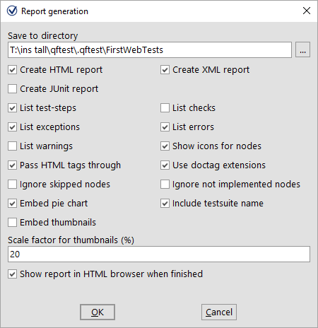
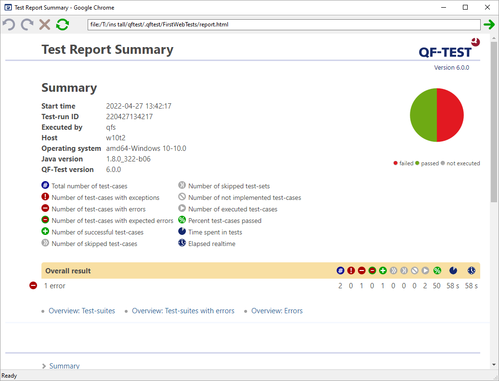

| Version 6.0.3 |
In the world of quality assurance documenting the test results is pretty important. To this end, QF-Test offers an automated report-generation feature. Since you've just done a complete test run, we're at a good point to show you this feature.
|
|  | ||
|
| Figure 10.17: Report Generation Properties | ||
In the first field, you can specify the file-name of the report. Following this, you can decide what type of report you want. QF-Test offers three kinds of reports, HTML, XML and JUnit format. An XML report is useful if you want to process the data further, e.g. if you have written your own XSLT stylesheets to shape the report. JUnit reports prove useful when you need to import results into build or test management tools.
Let's generate an HTML report from the results of the last test-run.
The report will then be generated and presented to you in a browser window:
|
|  | ||
|
| Figure 10.18: An HTML Report | ||
The report begins with a summary containing informational data from your system on the top left side, a legend describing the meaning of icons used in the report on the top right side, an overview pie chart in the middle and the overall test result below. In our case, the result we see are the error-free first test-case and the second with the well-known error, leading to a success rate of 50%.
Following the summary there are three overview sections:
The report generator is very useful for creating an overview document for presentation and archiving purposes.
| Last update: 9/6/2022 Copyright © 2002-2022 Quality First Software GmbH |